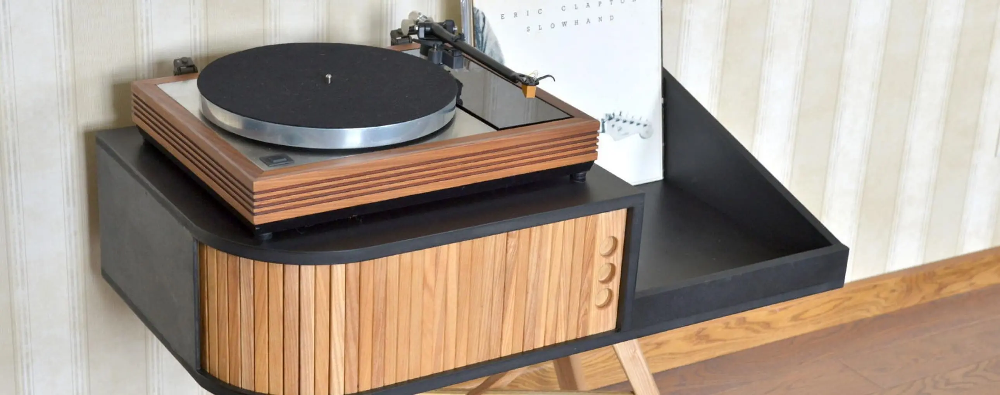

Шаг первый
В этом году исполняется вот уже полвека британской компании Rega, основанной Тони Релфом и Роем Ганди, а названной, как несложно догадаться, по первым буквам их фамилий. Впрочем, уже через пару лет Тони отошел от дел, а Рой выкупил его долю. Ганди родился в очень музыкальной семье — мать играла на фортепиано, отец был оперным певцом. Сам Рой до 13 лет играл на кларнете и до сих пор — на гитаре в местной группе. Однако в не меньшей степени его интересовала и техника для воспроизведения музыки. Получив образование и работая в компании Ford, он почти все свободное время проводил за разработкой аудиоаппаратуры. Подрабатывая продавцом, пришел к выводу, что гораздо больше времени тратит на приведение в порядок новых проигрывателей грампластинок, нежели на их непосредственную продажу. Отсюда до создания собственной модели Planet оставался всего один маленький шаг. Через пару лет появился первый проигрыватель Planar, а еще через год был выпущен Planar 3. Недавно была анонсирована юбилейная версия «тройки», но мы поговорим про стандартную, образца 2016 года. На ее создание у команды разработчиков во главе с бессменным Роем Ганди ушло 2 года. Новый проигрыватель пришел на смену культовой вертушки предыдущего поколения RP3. Корпус Rega Planar 3 изготовлен из более плотного материала, чем у предыдущей модели, и отделан глянцевым акрилом черного или белого цвета (на выбор). Усиливающий жесткость корпуса элемент, выполненный в соответствии с фирменной технологией Double Brace Technology, представлен двумя пластинами, соединяющими основание тонарма с блоком главного подшипника. Нижняя пластина толщиной в 3 мм (против 2 мм у RP3) вынесена на дно стола и выполнена из фенольной смолы, а в верхней используется такая же смола, но с металлизированной поверхностью. Такая жесткая конструкция гарантирует устойчивость к резонансам при сравнительно небольшой массе вертушки. Электродвигатель имеет обновленную плату управления, улучшенное охлаждение, получает питание в 24 В от адаптера и характеризуется низким уровнем шума. Для выбора требуемой скорости вращения диска (33,3 или 45 об/мин) достаточно перебросить пассик с одного шкива мотора на другой. Материалом для опорного диска служит осветленное стекло Optiwhite толщиной в 12 мм. В качестве опции доступен внешний блок питания Rega TT-PSU с электронной системой переключения скоростей. Модель получила три новые опорные ножки из сантопрена, которые эффективно справляются с вибрациями. Проигрыватель теперь выглядит еще более лаконично, так как выключатель питания перекочевал под панель корпуса.

Шаг второй
Даже по солнечным и беззаботным итальянским меркам, компания New Horizon — совсем новичок на этом рынке, ей всего 7 лет. Казалось бы — типичный стартап, в таком возрасте больше пристало заниматься наушниками или каким-нибудь приложением для стриминга музыки, однако же перед нами — полноценный модельный ряд проигрывателей винила, причем не только самостоятельно разработанных, но и произведенных в самом сердце Италии. Кстати о сердце, адрес New Horizon звучит так: область Умбрия, провинция Перуджа, коммуна Тоди, а если проще, то на сотню километров севернее Рима, можно сказать — в самом центре сапога. Модель 201 — младшая в «двухсотой» серии, но это вовсе не значит, что в ней сэкономили на качестве. Опорный диск из акрила толщиной 20 мм весит почти 2 кг, а общая масса проигрывателя со столом из HDF приближается к 7 кг. Двигатель закреплен на калиброванных пружинах, переключение с 33 на 45 оборотов производится перестановкой пассика. В качестве штатной головки используется Audio-Technica AT-3600L. Очевидно, что никто не мешает поставить и более интересный вариант, тем более, что никаких новомодных встроенных фонокорректоров тут нет. Это кстати еще один очевидный плюс с позиции дальнейших качественных изысканий, модель имеет огромный потенциал с точки зрения различных комбинаций компонентов в поисках своего звука.
